A More Beautiful Alternative to ImGui.
Engineered for Overlays & AI Agents.
An immediate-mode C++20 UI library built for OpenGL injection and standalone apps. Analytic signed-distance fields, MSDF vector typography, Yoga Flexbox, and spring dynamics — with a 1-second headless verification toolchain that lets AI coding agents build, test, and visually inspect their work.
Tailor Every UI to Your World
Not just a single theme: aris-ui gives you complete shader-level control over signed-distance geometry, shadows, gradients, and typography.
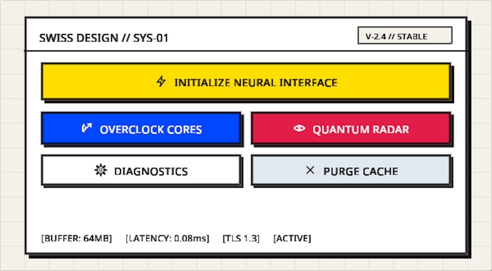
Architectural Print Actions
Stark 2.5px jet-black borders, solid unblurred drop shadows, canary yellow and cobalt action triggers, and tactile press states.
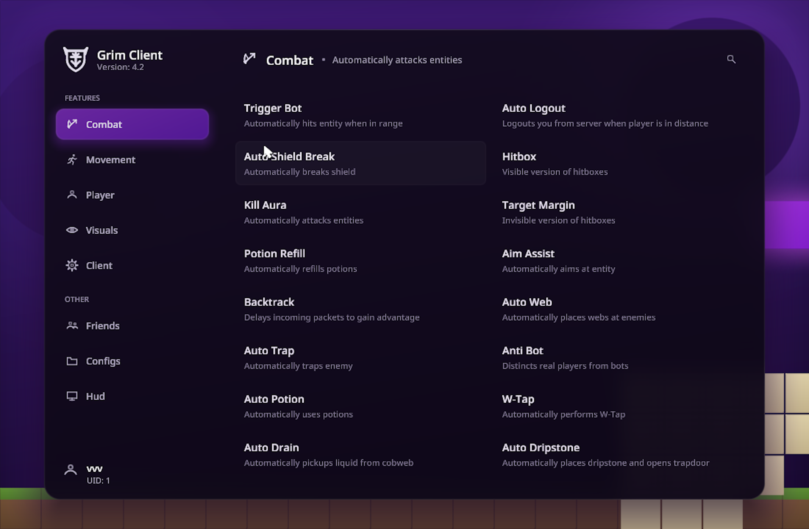
Translucent Overlay ClickGUI
Multi-category sidebar, search field, active category tabs, user profile badge, and module action cards inspired by Grim Client.
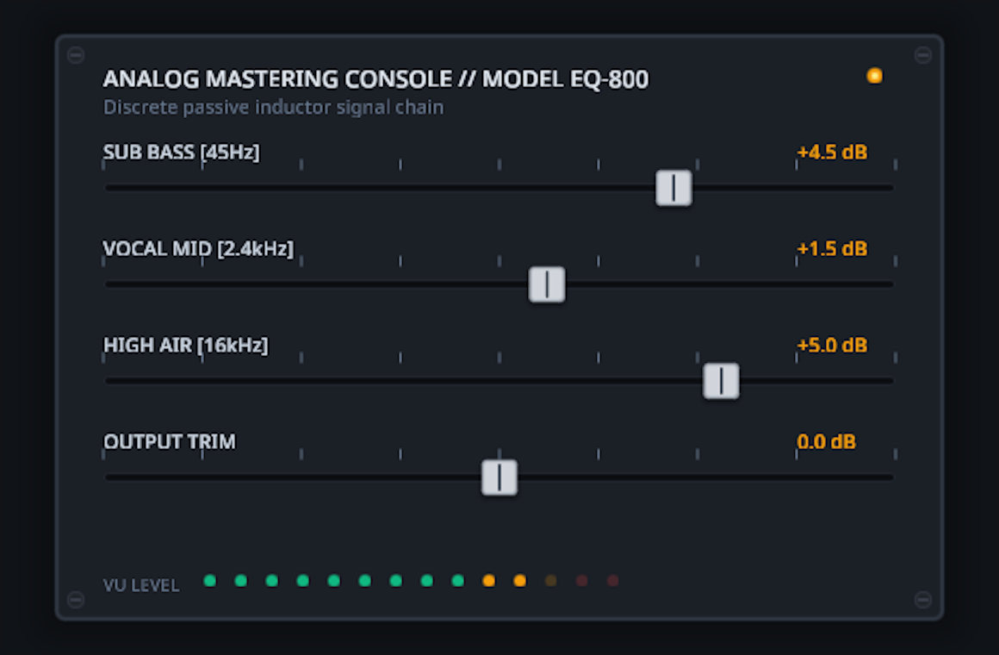
Analog Mastering Rack
Dark steel chassis with hex screw rivets, calibrated tick marks, tactile aluminum fader caps, and discrete 14-dot LED VU meters.
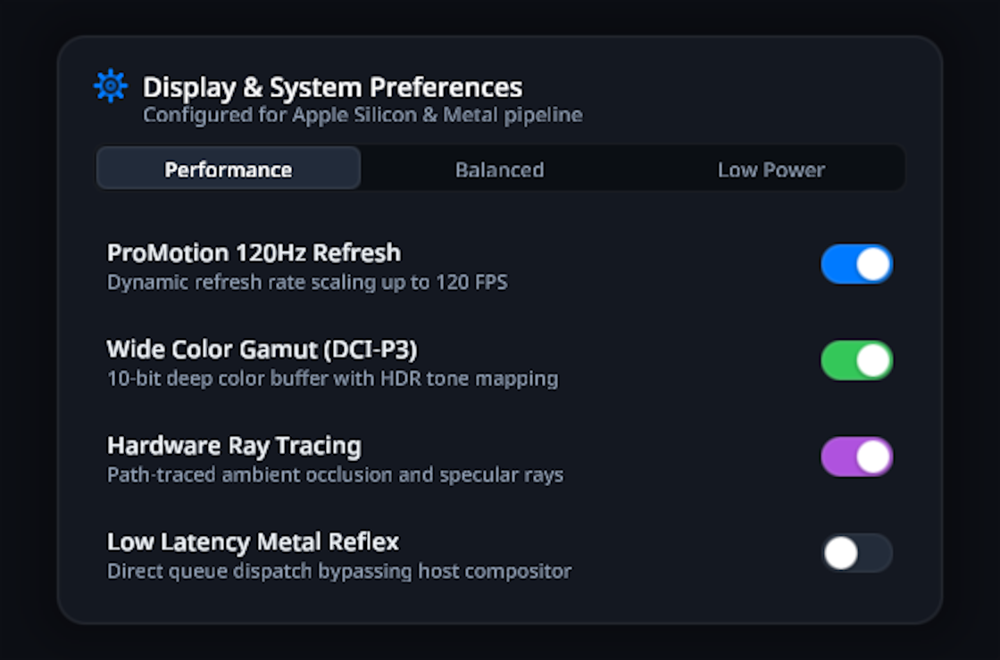
System & Display Preferences
Frosted dark glass card, 3-way segmented control tabs, smooth rounded toggle switches with drop-shadowed knobs.
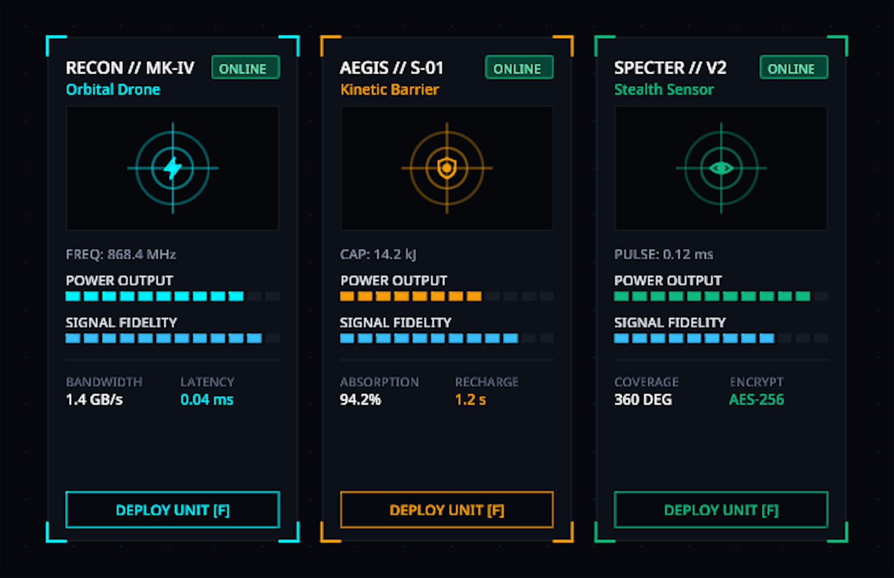
Telemetry & Target Deck
Corner-bracketed sci-fi unit cards, high-contrast reticle rings, segmented power/signal graphs, and action triggers.
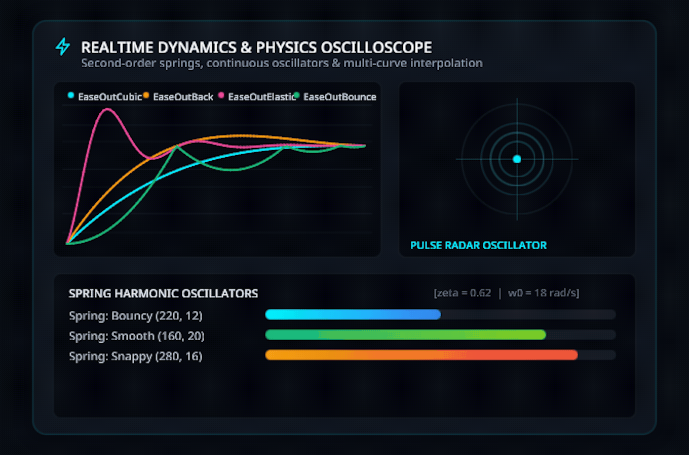
Spring Oscillators & Radar
Second-order harmonic spring physics (Bouncy, Smooth, Snappy), multi-curve interpolation, and continuous pulse radar.
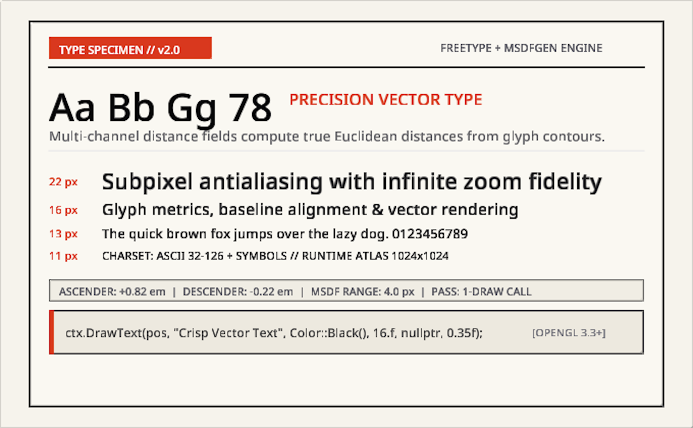
Bauhaus Type Specimen
Multi-channel distance field rendering with infinite DPI zoom fidelity, optical baseline alignment, and single-pass draw calls.
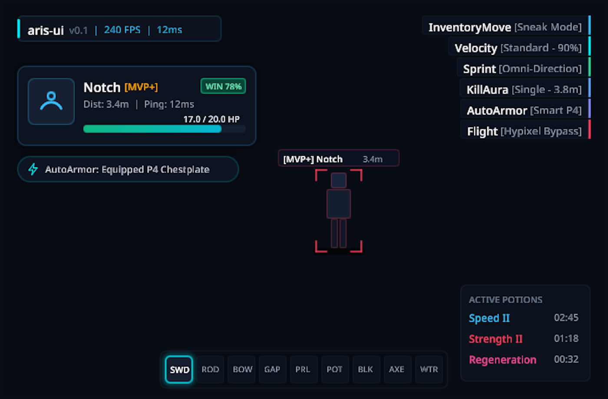
In-Game Combat HUD
Absolute-coordinate injection mode: watermark pill, target HUD card, notification alert toast, active potions, and hotbar.
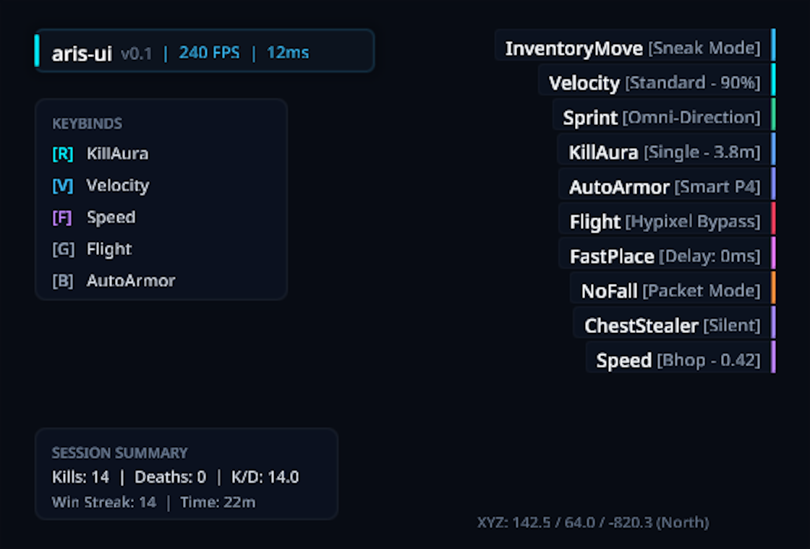
Descending Module Arraylist
Mathematically sorted module width ladder with color-coded accent bars, active keybinds HUD, and session statistics.
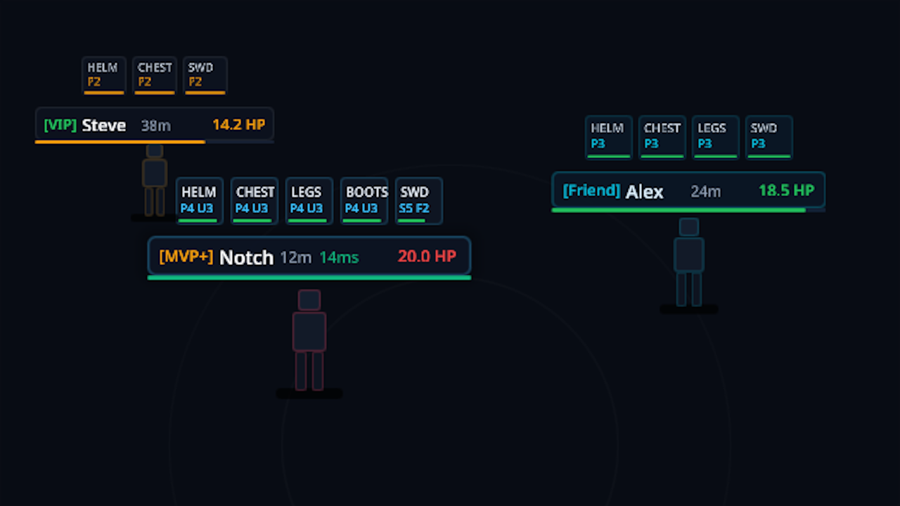
Perspective Nametags & Armor
Distance-scaled floating nametags, armor inventory slots with enchantment badges (P4 U3, S5 F2), and radar range rings.
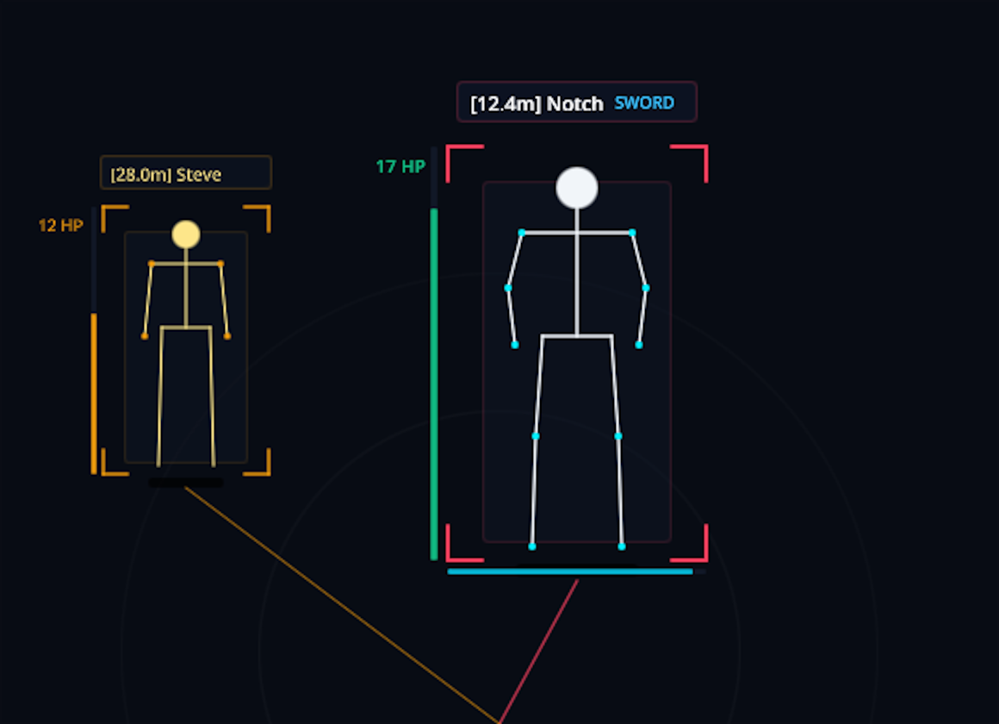
2D Box ESP & Skeleton Bones
Corner L-brackets, colored skeleton joints, translucent body mesh backing, vertical health bars, and ground tracer snaplines.
Built for Performance & AI Autonomy
Designed from the ground up for modern C++20 game overlays and friction-free autonomous AI agent workflows.
Analytic SDF Geometry
No vertex bloat or messy triangle meshes. Rounded rects, borders, and smooth drop shadows are evaluated analytically in the fragment shader for sub-pixel anti-aliasing.
Multi-Channel Signed Distance Fonts
Offline MSDF atlases generated via FreeType and msdfgen. One PNG + JSON atlas per font provides razor-sharp text from 10px micro-HUDs to 4K Ultra HD displays.
Flexbox Layout via Yoga
Declarative panels, rows, columns, and gutters powered by vendored Yoga flexbox. Retained between frames and automatically culled when unreferenced.
Spring Physics & Easing
Built-in second-order harmonic oscillators (ui::Spring), critically-damped smooth transitions, elastic curves, and continuous pulse oscillators.
Host-Safe OpenGL Guard
Caller-driven frame loop with zero background threads. GlStateGuard snapshots and restores the host's entire GL pipeline around the UI render pass.
AI Agent Verification Loop
Autonomous AI agents can run make verify to build the codebase, execute unit tests, and render headless PNG framebuffer snapshots into previews/ to inspect their changes.
Immediate-Mode Simplicity in Modern C++
Drop aris-ui directly into your game loop, render hook, or standalone GLFW application.
# First-time configure
make configure
# One-command agent verification loop:
# compiles, runs tests, and produces headless PNG snapshots
make verify
# Launch interactive desktop demo
make demo// Inside your render / swapbuffers hook:
ui::GlStateGuard guard; // restores GL state automatically
ctx.BeginFrame(deltaTime, screenWidth, screenHeight);
ctx.BeginPanel("settings", panelRect, panelStyle);
if (ui::Button(ctx, "Overclock Cores")) {
TriggerOverclock();
}
ui::Toggle(ctx, "Ray Tracing", &rtxEnabled);
ui::Slider(ctx, "Volume", &masterVolume, 0.f, 1.f);
ctx.EndPanel();
ctx.Render(); // executes batched SDF draw commandsWhy aris-ui vs Other Toolkits?
| Feature | aris-ui | Dear ImGui | NanoVG |
|---|---|---|---|
| Geometry Rendering | Analytic SDF Fragment Shaders | Tessellated Vertex Triangles | CPU Vector Path Rasterization |
| Antialiased Shadows & Glows | Built-in SDF Shadows (0 overhead) | None / Expensive multi-pass blur | Basic radial gradients |
| Typography Quality | MSDF Vector Atlases (infinite zoom) | Raster Bitmap Atlases (pixelates) | TrueType CPU rasterizer |
| Layout Engine | Yoga Flexbox (Rows, Columns, Gaps) | Cursor-based manual advance | Manual coordinates only |
| Physics & Transitions | Spring Dynamics & Easing built-in | Requires third-party extensions | None |
| Headless Agent Testing | Native headless PNG dumps (make verify) | Requires windowing & display | Manual FBO configuration |